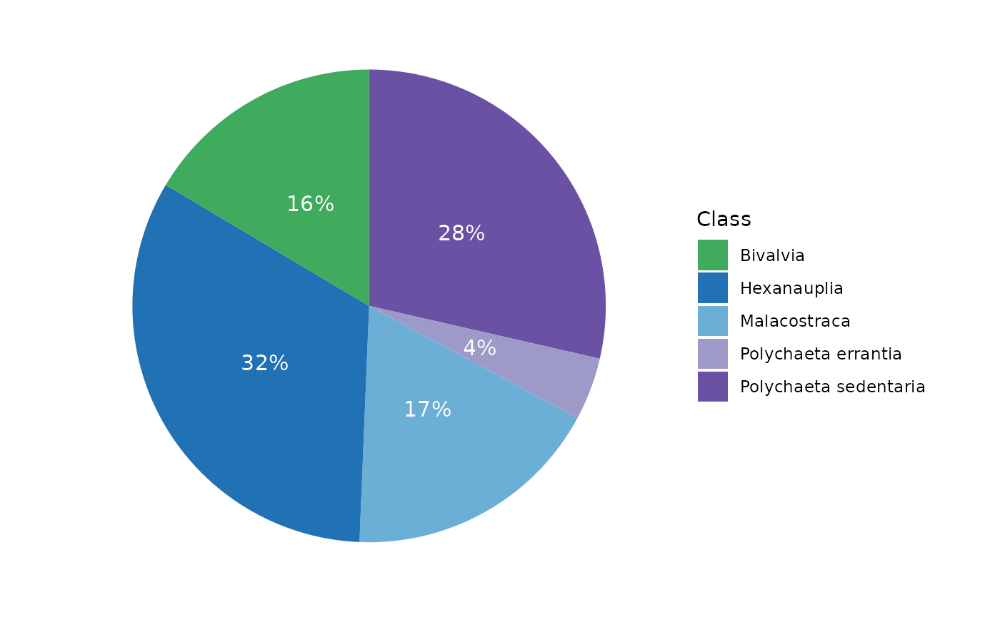
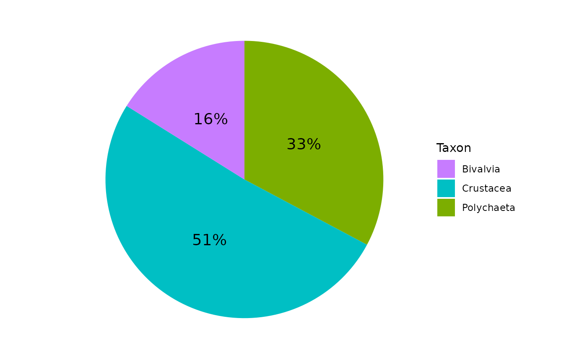
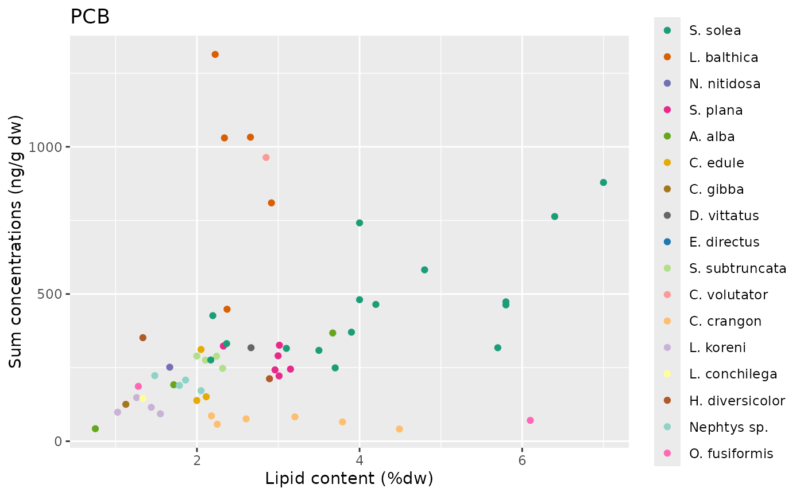
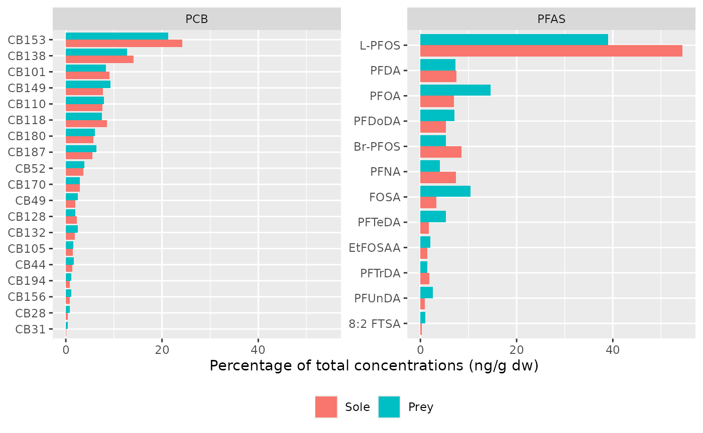
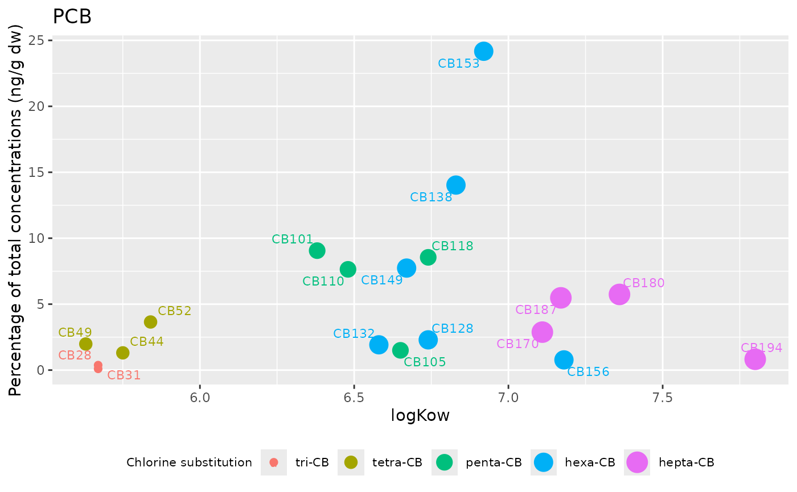
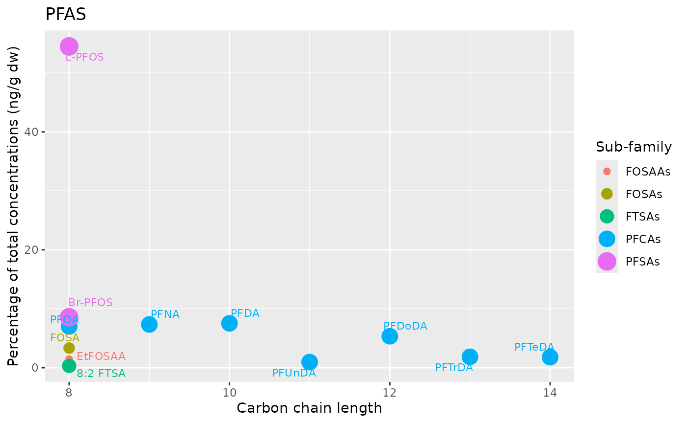

1. Diet composition
Class diet composition
diet_class <- diet_species |>
group_by(taxon, Class) |>
summarise(diet_portion = sum(diet_portion), .groups = "drop")
diet_class <- diet_class |>
arrange(desc(Class)) |>
filter(diet_portion > 0.02) |>
mutate(
ypos = diet_portion / 2 + c(0, cumsum(diet_portion)[-length(diet_portion)]),
label = paste0(round(diet_portion * 100), "%")
)
# Color palettes by taxonomic group
diet_class |> group_by(taxon) |> distinct(Class) |> summarise(n())## # A tibble: 3 × 2
## taxon `n()`
## <chr> <int>
## 1 Annelida 2
## 2 Arthropoda 2
## 3 Mollusca 1
ggcolors <- c(brewer.pal(9, "Greens")[c(6)],
brewer.pal(9, "Blues")[c(7,5)],
brewer.pal(9, "Purples")[c(5,7)]
)
# Pie chart
ggplot_diet_class <- ggplot(data = diet_class) +
aes(x = "", y = diet_portion, fill = Class) +
geom_bar(width = 1, stat = "identity") +
coord_polar("y", start=0) +
scale_fill_manual(values = ggcolors) +
labs(fill = "Class") +
theme_minimal() +
theme(
axis.title.x = element_blank(),
axis.title.y = element_blank(),
panel.border = element_blank(),
panel.grid = element_blank(),
axis.ticks = element_blank()
) +
theme(axis.text.x=element_blank()) +
geom_text(aes(y = ypos, label = label), size = 4, colour = "white")
ggplot_diet_class
# Save plot
ggsave(plot = ggplot_diet_class, filename = "../inst/results/Data_analysis/1.ggplot_diet_class.jpg",
width = 5, height = 3)Taxon diet composition
gg_color_hue <- function(n) {
hues = seq(15, 375, length = n + 1)
hcl(h = hues, l = 65, c = 100)[1:n]
}
colors = gg_color_hue(4)
diet <- diet_comp %>%
arrange(desc(taxon)) %>%
mutate(
ypos = diet_portion / 2 + c(0, cumsum(diet_portion)[-length(diet_portion)]),
label = paste0(round(diet_portion * 100), "%")
)
ggplot_diet <- ggplot(data = diet) +
aes(x = "", y = diet_portion, fill = taxon) +
geom_bar(width = 1, stat = "identity") +
coord_polar("y", start=0) +
scale_fill_manual(values = c(colors[4], colors[3], colors[2])) +
labs(fill = "Taxon") +
theme_minimal() +
theme(
axis.title.x = element_blank(),
axis.title.y = element_blank(),
panel.border = element_blank(),
panel.grid = element_blank(),
axis.ticks = element_blank()
) +
theme(axis.text.x=element_blank()) +
geom_text(aes(y = ypos, label = label), size = 5)
ggplot_diet
# Save plot
ggsave(plot = ggplot_diet, filename = "../inst/results/Data_analysis/1.ggplot_diet.jpg",
width = 5, height = 3)2. Lipid contents
Dataset:
lipid <- contam |>
select(species, lipid_percent_dw) |>
full_join(metadata) |>
drop_na()## Joining with `by = join_by(species)`Descriptive statistics:
min(lipid$lipid_percent_dw) # 0.75## [1] 0.75
max(lipid$lipid_percent_dw) # 7## [1] 7
lipid |> summarise(median(lipid_percent_dw), .by = grp)## # A tibble: 4 × 2
## grp `median(lipid_percent_dw)`
## <fct> <dbl>
## 1 Bivalvia 2.32
## 2 Crustacea 2.85
## 3 Polychaeta 1.48
## 4 Actinopterygii 4Tests between taxa:
dunn_lipid <- dunnTest(lipid_percent_dw ~ grp, data = lipid, method = "bonferroni")
res_dunn_grp <- dunn_lipid$res |> select(Comparison, P.adj) |>
mutate(P.adj = round(P.adj, digits = 3))
res_dunn_grp## Comparison P.adj
## 1 Actinopterygii - Bivalvia 0.001
## 2 Actinopterygii - Crustacea 1.000
## 3 Bivalvia - Crustacea 0.874
## 4 Actinopterygii - Polychaeta 0.000
## 5 Bivalvia - Polychaeta 0.316
## 6 Crustacea - Polychaeta 0.035
# Annotations for boxplots
counts <- lipid |>
group_by(grp) |>
summarise(n = sum(!is.na(lipid_percent_dw)))
# Boxplots
ggplot_lipid <- ggplot(lipid) +
aes(x = grp, y = lipid_percent_dw, fill = grp) +
geom_boxplot() +
labs(x = NULL, y = "Lipid content (%dw)", fill = "Taxa") +
geom_text(
data = counts,
aes(x = c(1, 2, 3, 4),
y = max(lipid$lipid_percent_dw)*1.1,
label = paste0("n=", n)),
inherit.aes = FALSE, hjust = 0.5, vjust = 1
)
# Save plot
ggsave(plot = ggplot_lipid, filename = "../inst/results/Data_analysis/2.ggplot_lipid.jpg",
width = 5, height = 3)3. Total levels by family
Table of statistics for each taxon and feeding mode in ng/g dw, ng/g ww and ng/d lw:
sub_data <- list("Soles" = contam |> filter(species == "Solea_solea"),
"Prey" = contam |> filter(species != "Solea_solea"),
"Bivalves" = contam |> filter(grp == "Bivalvia"),
"Crustaceans" = contam |> filter(grp == "Crustacea"),
"Polychaetes" = contam |> filter(grp == "Polychaeta"),
"Suspensivores" = contam |> filter(alim == "Suspensivore"),
"Deposivores" = contam |> filter(alim == "Deposivore"),
"Omnivores" = contam |> filter(alim == "Omnivore"))
families <- c("PCB", "PFAS")
sum_levels_ng_gdw <- c()
for(family in families){
for(type in 1:length(sub_data)) {
sum_levels_ng_gdw <- rbind(sum_levels_ng_gdw,
get_stats(type = names(sub_data)[type],
contam = paste0(family, " (ng/gdw)"),
sub_data[[type]][, paste0("somme", family, "_ng_gdw")] |> pull()))
}
}
sum_levels_ng_gww <- c()
for(family in families){
for(type in 1:length(sub_data)) {
sum_levels_ng_gww <- rbind(sum_levels_ng_gww,
get_stats(type = names(sub_data)[type],
contam = paste0(family, " (ng/gww)"),
sub_data[[type]][, paste0("somme", family, "_ng_gww")] |> pull()))
}
}
sum_levels_ng_glw <- c()
for(family in families[c(1)]){
for(type in 1:length(sub_data)) {
sum_levels_ng_glw <- rbind(sum_levels_ng_glw,
get_stats(type = names(sub_data)[type],
contam = paste0(family, " (ng/glw)"),
sub_data[[type]][, paste0("somme", family, "_ng_glw")] |> pull()))
}
}
# List of data per unit
sum_levels <- list("sum_levels_ng_gdw" = sum_levels_ng_gdw,
"sum_levels_ng_gww" = sum_levels_ng_gww,
"sum_levels_ng_glw" = sum_levels_ng_glw)
# Save dataset
write_xlsx(x = sum_levels, path = "../inst/results/Data_analysis/3.sum_levels.xlsx")
families <- c("CB153", "L-PFOS")
sum_levels_ng_gdw <- c()
for(family in families){
for(type in 1:length(sub_data)) {
sum_levels_ng_gdw <- rbind(sum_levels_ng_gdw,
get_stats(type = names(sub_data)[type],
contam = paste0(family, " (ng/gdw)"),
sub_data[[type]][, paste0(family, "_ng_gdw")] |> pull()))
}
}
sum_levels_ng_gww <- c()
for(family in families){
for(type in 1:length(sub_data)) {
sum_levels_ng_gww <- rbind(sum_levels_ng_gww,
get_stats(type = names(sub_data)[type],
contam = paste0(family, " (ng/gww)"),
sub_data[[type]][, paste0(family, "_ng_gww")] |> pull()))
}
}
sum_levels_ng_glw <- c()
for(family in families[c(1)]){
for(type in 1:length(sub_data)) {
sum_levels_ng_glw <- rbind(sum_levels_ng_glw,
get_stats(type = names(sub_data)[type],
contam = paste0(family, " (ng/glw)"),
sub_data[[type]][, paste0(family, "_ng_glw")] |> pull()))
}
}
# List of data per unit
sum_levels <- list("sum_levels_ng_gdw" = sum_levels_ng_gdw,
"sum_levels_ng_gww" = sum_levels_ng_gww,
"sum_levels_ng_glw" = sum_levels_ng_glw)
# Save dataset
write_xlsx(x = sum_levels, path = "../inst/results/Data_analysis/3.sum_levels_CB153_LPFOS.xlsx")4. Total levels by taxon and feeding mode
Plot of the total levels (sum in ng/g dw) in the different taxa and feeding mode:
ggdata_sumfamily_taxalim <- contam |>
select(species, grp, alim, sommePCB_ng_gdw, sommePFAS_ng_gdw,) |>
pivot_longer(cols = c(sommePCB_ng_gdw, sommePFAS_ng_gdw),
names_to = "family", values_to = "sum_ng_gdw") |>
mutate(family = family |> str_remove("somme"),
family = family |> str_remove("_ng_gdw"),
family = factor(family, levels = c("PCB", "PFAS")))
# Annotations for plot
counts <- ggdata_sumfamily_taxalim |>
group_by(family, grp) |>
summarise(counts = sum(!is.na(sum_ng_gdw)))## `summarise()` has grouped output by 'family'. You can override using the
## `.groups` argument.
maxs <- ggdata_sumfamily_taxalim |>
group_by(family) |>
summarise(maxs = max(sum_ng_gdw, na.rm = TRUE))
gg_text <- full_join(counts, maxs)## Joining with `by = join_by(family)`
ggplot_sumfamily_taxalim <- ggplot(ggdata_sumfamily_taxalim) +
aes(x = grp, y = sum_ng_gdw, fill = alim, col = alim) +
geom_dotplot(binaxis = 'y', stackdir = 'center', dotsize = 0.7) +
facet_wrap(vars(family), nrow = 1, scales = "free_y") +
# add median value
stat_summary(inherit.aes = FALSE, aes(x = grp, y = sum_ng_gdw),
fun = median, geom = "crossbar", size = 0.5, width = .5) +
theme(axis.text.x=element_text(size=9, angle=45, hjust=1)) +
theme(legend.position = "bottom") +
labs(x = NULL, y = "Sum concentrations (ng/g dw)", fill = "Feeding mode") +
guides(color = FALSE) +
geom_text(
data = gg_text,
aes(x = rep.int(1:4, times = 2),
y = maxs*1.1,
label = paste0("n=", counts)),
inherit.aes = FALSE, hjust = 0.5, vjust = 1
)## Warning: Using `size` aesthetic for lines was deprecated in ggplot2 3.4.0.
## ℹ Please use `linewidth` instead.
## This warning is displayed once every 8 hours.
## Call `lifecycle::last_lifecycle_warnings()` to see where this warning was
## generated.## Warning: The `<scale>` argument of `guides()` cannot be `FALSE`. Use "none" instead as
## of ggplot2 3.3.4.
## This warning is displayed once every 8 hours.
## Call `lifecycle::last_lifecycle_warnings()` to see where this warning was
## generated.
ggsave(
filename = "../inst/results/Data_analysis/4.ggplot_contamination_sumfamily_taxalim.jpg",
plot = ggplot_sumfamily_taxalim, width = 20, height = 10, units = "cm"
)## Bin width defaults to 1/30 of the range of the data. Pick better value with
## `binwidth`.## Warning: Removed 12 rows containing missing values or values outside the scale range
## (`stat_bindot()`).## Warning: Removed 12 rows containing non-finite outside the scale range
## (`stat_summary()`).Test taxa effect:
# PCB in ng/g lw
kruskal.test(sommePCB_ALL_ng_glw ~ grp, data = contam) # p-value < 0.05##
## Kruskal-Wallis rank sum test
##
## data: sommePCB_ALL_ng_glw by grp
## Kruskal-Wallis chi-squared = 10.715, df = 3, p-value = 0.01337
# PFAS in ng/g dw
kruskal.test(sommePFAS_ALL_ng_gdw ~ grp, data = contam) # p-value < 0.05##
## Kruskal-Wallis rank sum test
##
## data: sommePFAS_ALL_ng_gdw by grp
## Kruskal-Wallis chi-squared = 25.308, df = 3, p-value = 1.331e-05
dunn_PCB_grp <- dunnTest(sommePCB_ALL_ng_glw ~ grp, data = contam |> drop_na(sommePCB_ALL_ng_glw))
dunn_PFAS_grp <- dunnTest(sommePFAS_ALL_ng_gdw ~ grp, data = contam |> drop_na(sommePFAS_ALL_ng_gdw))
res_dunn_grp <- dunn_PCB_grp$res |> select(Comparison, P.adj) |>
full_join(dunn_PFAS_grp$res |> select(Comparison, P.adj), by = "Comparison") |>
mutate(across(.cols = c(P.adj.x, P.adj.y), .fns = ~ signif(.x, digits = 4)))
names(res_dunn_grp) <- c("Comparison", "PCB", "PFAS")
writexl::write_xlsx(x = res_dunn_grp, path = "../inst/results/Data_analysis/4.test_dunn_taxa.xlsx")Test feeding mode effect:
# PCB in ng/g lw
kruskal.test(sommePCB_ALL_ng_glw ~ alim, data = contam) # p-value = 0.14##
## Kruskal-Wallis rank sum test
##
## data: sommePCB_ALL_ng_glw by alim
## Kruskal-Wallis chi-squared = 3.9438, df = 2, p-value = 0.1392
# PFAS in ng/g dw
kruskal.test(sommePFAS_ALL_ng_gdw ~ alim, data = contam) # p-value < 0.05##
## Kruskal-Wallis rank sum test
##
## data: sommePFAS_ALL_ng_gdw by alim
## Kruskal-Wallis chi-squared = 19.447, df = 2, p-value = 5.987e-05
dunn_PCB_alim <- dunnTest(sommePCB_ALL_ng_glw ~ alim, data = contam |> drop_na(sommePCB_ALL_ng_glw))
dunn_PFAS_alim <- dunnTest(sommePFAS_ALL_ng_gdw ~ alim, data = contam |> drop_na(sommePFAS_ALL_ng_gdw))
res_dunn_alim <- dunn_PCB_alim$res |> select(Comparison, P.adj) |>
full_join(dunn_PFAS_alim$res |> select(Comparison, P.adj), by = "Comparison") |>
mutate(across(.cols = c(P.adj.x, P.adj.y), .fns = ~ signif(.x, digits = 4)))
names(res_dunn_alim) <- c("Comparison", "PCB", "PFAS")
writexl::write_xlsx(x = res_dunn_alim, path = "../inst/results/Data_analysis/4.test_dunn_alim.xlsx")5. Total levels by species
Plot of the total levels (sum in ng/g dw) in the different species:
ggdata_sumfamily_species <- contam |>
select(labels, grp, alim, sommePCB_ng_gdw, sommePFAS_ng_gdw) |>
pivot_longer(cols = c(sommePCB_ng_gdw, sommePFAS_ng_gdw),
names_to = "family", values_to = "sum_ng_gdw") |>
mutate(family = family |> str_remove("somme"),
family = family |> str_remove("_ng_gdw"),
family = factor(family, levels = c("PCB", "PFAS")))
ggplot_sumfamily_species <- ggplot(ggdata_sumfamily_species) +
aes(x = labels, y = sum_ng_gdw, fill = grp, color = grp, shape = alim) +
geom_point() +
facet_wrap(vars(family), nrow = 1, scales = "free_y") +
theme(axis.text.x=element_text(size=9, angle=45, hjust=1)) +
theme(legend.position = "bottom") +
labs(x = NULL, y = "Sum concentrations (ng/g dw)", color = "Taxon", shape = "Feeding mode") +
guides(fill = FALSE, shape = guide_legend(nrow=2), color = guide_legend(nrow=2))
ggsave(
filename = "../inst/results/Data_analysis/5.ggplot_contamination_sumfamily_species.jpg",
plot = ggplot_sumfamily_species, width = 20, height = 10, units = "cm"
)## Warning: Removed 12 rows containing missing values or values outside the scale range
## (`geom_point()`).6. Total levels in PCBs versus lipid content
There is a significant positive correlation between lipid content and PCB contamination levels (Spearman’s test: p-value = 5×10⁻⁴, ρ = 0.43). However, some species appear to deviate from this general trend. For example, Crangon crangon shows highly variable lipid levels without a corresponding increase in PCB contamination. Conversely, Limecola balthica exhibits relatively stable lipid content despite a wide range of PCB concentrations.
cor.test(x = contam$lipid_percent_dw, y = contam$sommePCB_ng_gdw, method = "spearman")## Warning in cor.test.default(x = contam$lipid_percent_dw, y =
## contam$sommePCB_ng_gdw, : Cannot compute exact p-value with ties##
## Spearman's rank correlation rho
##
## data: contam$lipid_percent_dw and contam$sommePCB_ng_gdw
## S = 20322, p-value = 0.0005084
## alternative hypothesis: true rho is not equal to 0
## sample estimates:
## rho
## 0.4353396
ggplot_lipid_PCB <- ggplot(contam) +
aes(x = lipid_percent_dw, y = sommePCB_ng_gdw, color = labels) +
geom_point() +
scale_color_manual(values = my_colors) +
labs(title = "PCB", x = "Lipid content (%dw)", y = "Sum concentrations (ng/g dw)", color = NULL)
ggplot_lipid_PCB## Warning: Removed 6 rows containing missing values or values outside the scale range
## (`geom_point()`).
ggsave("../inst/results/Data_analysis/6.lipid_vs_contaminants.png", ggplot_lipid_PCB, width = 15, height = 12, unit = "cm")## Warning: Removed 6 rows containing missing values or values outside the scale range
## (`geom_point()`).7. Average contamination profiles in soles and their prey
contam_profile <- contam |>
mutate(type = case_when(species == "Solea_solea" ~ "Sole",
TRUE ~ "Prey")) |>
select(species, type, ends_with("normalised_sum_ng_gdw")) |>
group_by(type) |>
summarise(across(.cols = -c(species), .fns = ~ mean(.x, na.rm = TRUE)*100), .groups = "drop") |>
pivot_longer(cols = -type, names_to = "chemical", values_to = "percent") |>
mutate(chemical = chemical |> str_remove("_normalised_sum_ng_gdw"),
family = case_when(str_starts(chemical, "CB") ~ "PCB",
TRUE ~ "PFAS")) |>
mutate(family = factor(family, levels = c("PCB", "PFAS")),
type = factor(type, levels = c("Sole", "Prey"))) |>
group_by(family) |>
mutate(chemical = fct_reorder(chemical, percent, .fun = min)) |> # order chemical by percent values
ungroup()
ggplot_profile <- ggplot(contam_profile) +
aes(x = chemical, y = percent, fill = type) +
geom_col(position = "dodge") +
facet_wrap(vars(family), nrow = 1, scales = "free_y") +
labs(x = NULL, y = "Percentage of total concentrations (ng/g dw)", fill = NULL) +
theme(legend.position = "bottom") +
coord_flip()
ggplot_profile
ggsave("../inst/results/Data_analysis/7.contamination_profiles.jpg", ggplot_profile, width = 8, height = 4, dpi = 300)
contam_profile_report <- contam_profile |>
mutate(percent = round(percent, digits = 1)) |>
pivot_wider(names_from = type, values_from = percent) |>
select(-family)
writexl::write_xlsx(x = contam_profile_report, path = "../inst/results/Data_analysis/7.contamination_profile.xlsx")8. Physico-chemical properties and contamination profiles
contam_profile_prop <- left_join(contam_profile, contam_prop)## Joining with `by = join_by(chemical, family)`
contam_profile_prop_PCB <- contam_profile_prop |>
filter(family == "PCB", type == "Sole") |>
mutate(sub_family_TAG = factor(sub_family_TAG,
levels = c("tri-CB", "tetra-CB", "penta-CB",
"hexa-CB", "hepta-CB")))
ggplot_contam_profile_prop_PCB <- ggplot(contam_profile_prop_PCB) +
aes(x = logKow, y = percent, size = sub_family_TAG, color = sub_family_TAG) +
geom_point() +
geom_text_repel(aes(label = chemical), size = 3,
point.padding = 1, max.overlaps = 20) +
theme(legend.position = "bottom") +
theme(
legend.text = element_text(size = 8),
legend.title = element_text(size = 8)
) +
labs(title = "PCB", y = "Percentage of total concentrations (ng/g dw)",
size = "Chlorine substitution", color = "Chlorine substitution")
ggplot_contam_profile_prop_PCB## Warning: Using size for a discrete variable is not advised.
ggsave("../inst/results/Data_analysis/8.contam_profiles_prop_PCB.jpg",
ggplot_contam_profile_prop_PCB, width = 6, height = 5, dpi = 300)## Warning: Using size for a discrete variable is not advised.
contam_profile_prop_PFAS <- contam_profile_prop |>
filter(family == "PFAS", type == "Sole") |>
mutate(n_C = as.numeric(n_C))
ggplot_contam_profile_prop_PFAS <- ggplot(contam_profile_prop_PFAS) +
aes(x = n_C, y = percent, size = sub_family_TAG, color = sub_family_TAG) +
geom_point() +
geom_text_repel(aes(label = chemical), size = 3,
point.padding = 1, max.overlaps = 20) +
labs(title = "PFAS", y = "Percentage of total concentrations (ng/g dw)",
x = "Carbon chain length",
size = "Sub-family", color = "Sub-family")
ggplot_contam_profile_prop_PFAS## Warning: Using size for a discrete variable is not advised.
ggsave("../inst/results/Data_analysis/8.contam_profiles_prop_PFAS.jpg",
ggplot_contam_profile_prop_PFAS, width = 6, height = 6, dpi = 300)## Warning: Using size for a discrete variable is not advised.